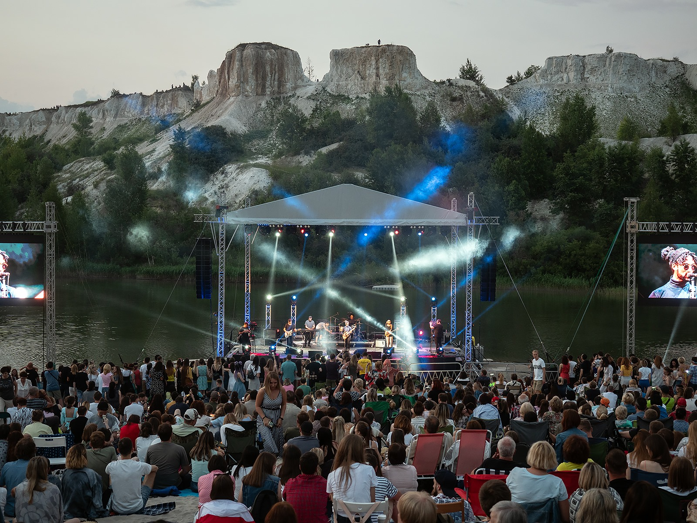

XIV Международный Платоновский фестиваль искусств
Платоновский фестиваль в Воронеже будет проходить с 31 мая по 29 июня. В программе - театральные постановки, музыкальная программа, мастер-классы и многое другое. Об этом сообщили представители Фестивальной дирекции Воронежской области в рамках пресс-конференции.
О мероприятии
Откроет мероприятие фестиваль уличных театров (6+). Он будет проходить в парке Алые Паруса с 12:00 до 22:00 31 мая и 1 июня. 12 коллективов из Москвы, Санкт-Петербурга, Альметьевска, Самары, Нижнего Новгорода и Воронежа представят постановки под открытым небом. Вход свободный
Дальше музыкальная программа с японским пианистом Марселем Тадокоро и Симфоническим оркестром Воронежского концертного зала (6+). Воронежцы смогут насладиться музыкой выдающегося музыканта 3 июня в 16:00 в Воронежском концертном зале. Марсель является лауреатом множества международных конкурсов, среди которых: «Сантандер» (Испания, 2018), «Lagny-sur-Marne», «Ile de France» (Франция), конкурса имени Королевы Елизаветы (Бельгия, 2021), конкурс «Монреаль» (Канада) и других.